The stone industry is traditionally disorganized, and our goal is to modernize it. Stone is a natural material that is cut into slabs, with pieces in batches arranged so one end of a stone seamlessly aligns with the next. We developed a real-time inventory management system for this process. If a stone gets broken, no problem—our system includes an easy-to-use UI for entering the value of chipped corners, allowing users to see the cut stone and automatically adjust the price (by finding the largest rectangle). Additionally, we provided an e-commerce solution for purchasing stone for house flooring online. Lastly, our AR experience lets users see how the stone looks in 3D on walls or floors.
Pitch for Stone Industry Management app
In our research and testing, we found that users preferred having an indication of the number
of steps
required to order a stone. We implemented a step-by-step guide showing the stages: adding to cart, adding
address, adding payment, and swiping to pay, labeled as 1, 2, 3, 4. Upon completing the process, we added a
celebration confetti animation for a successful order. This feature was well-received and loved by users.
The Zeigarnik Effect, a psychological phenomenon where people remember uncompleted or interrupted
tasks
better than completed ones, can be leveraged in UX design to enhance user engagement and completion rates.
By showing users the steps required to complete their order, we tap into the Zeigarnik Effect, keeping them
motivated to continue through each step until completion. If a person leaves the process mid-way, they are
constantly reminded of their incomplete steps when they return to browse more stones, driving their desire
to complete the task. The visual progress indicators and the final celebration confetti act as incentives,
reducing the likelihood of task abandonment and ensuring a more satisfying user experience.
This strategic
use of the Zeigarnik Effect in our design directly contributed to the positive feedback and increased user
satisfaction in our case study. Users particularly loved the gamification aspect, where the confetti
celebration provided a rewarding sense of achievement upon completing their purchase.
An innovative UX backed by Robust algorithms to solve client needs.


 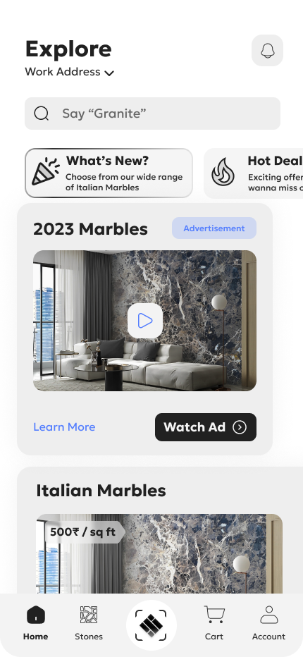
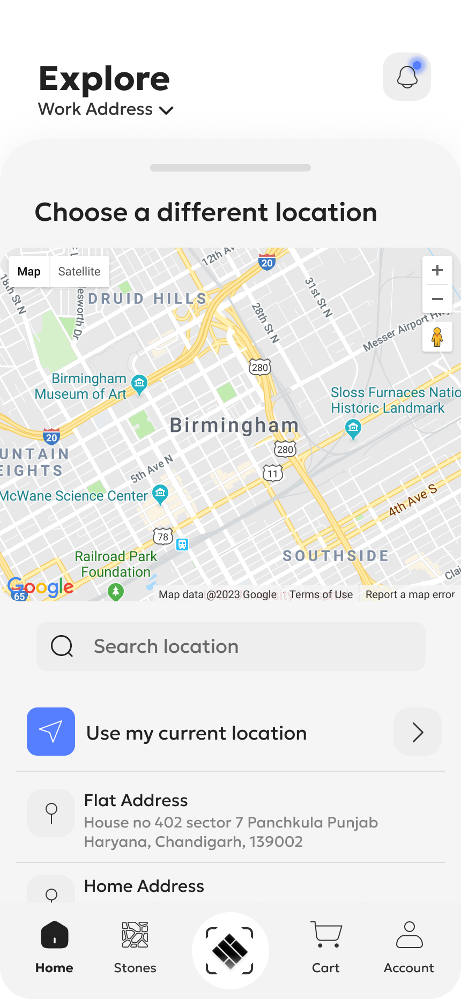
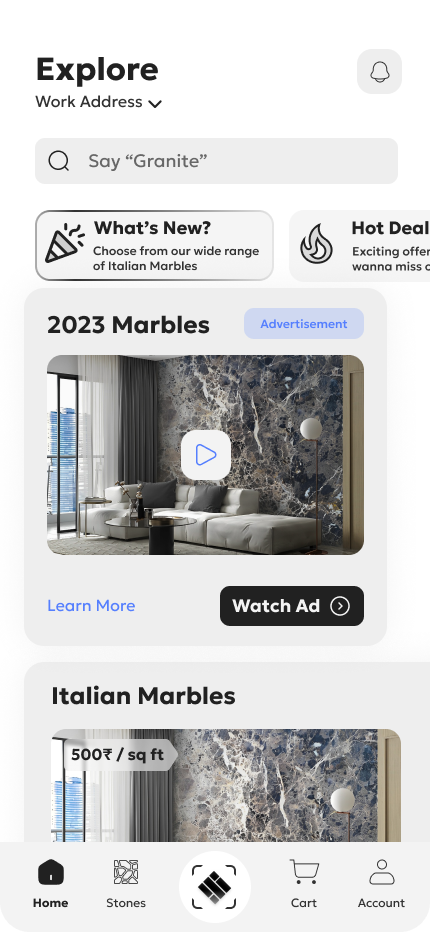
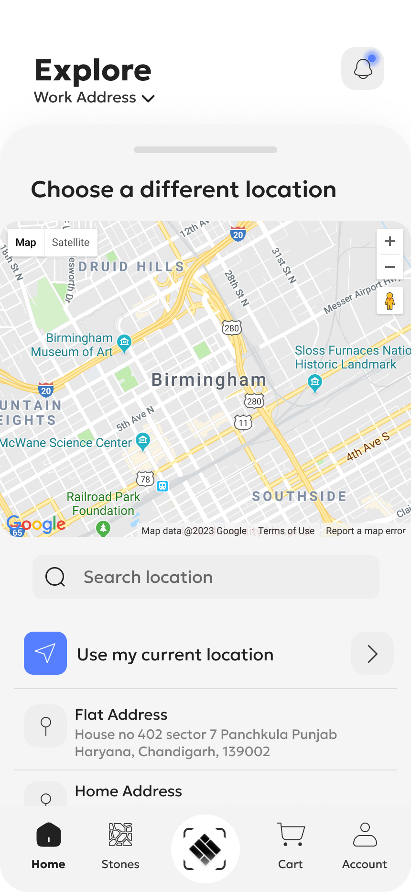
 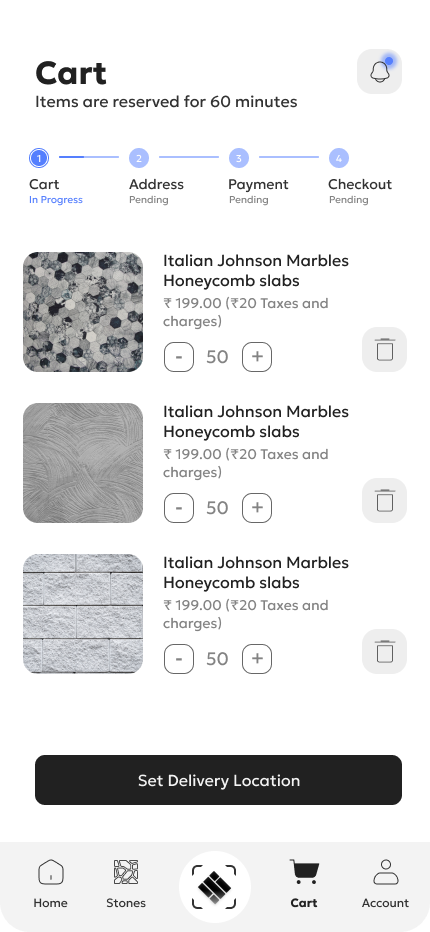
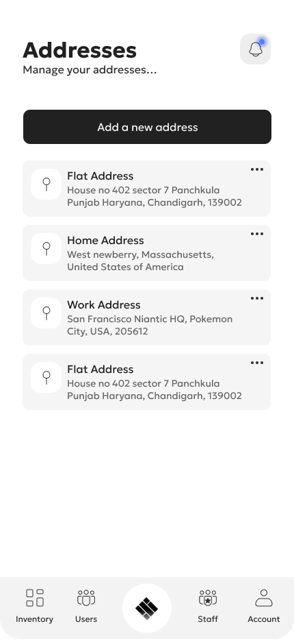
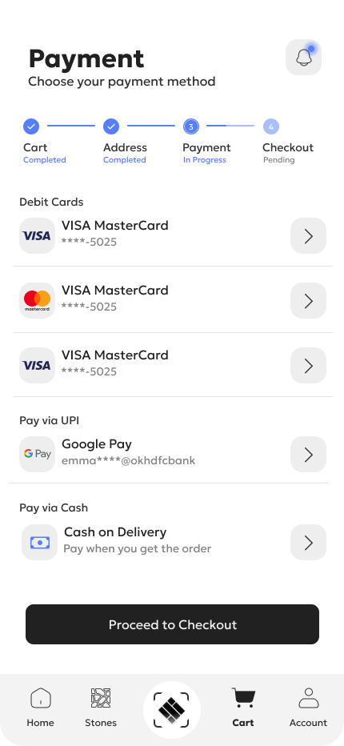
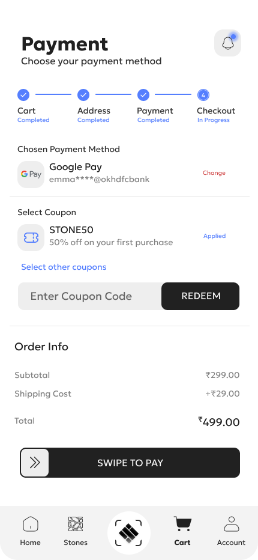
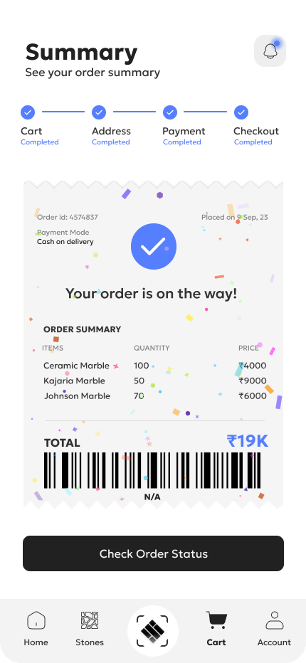
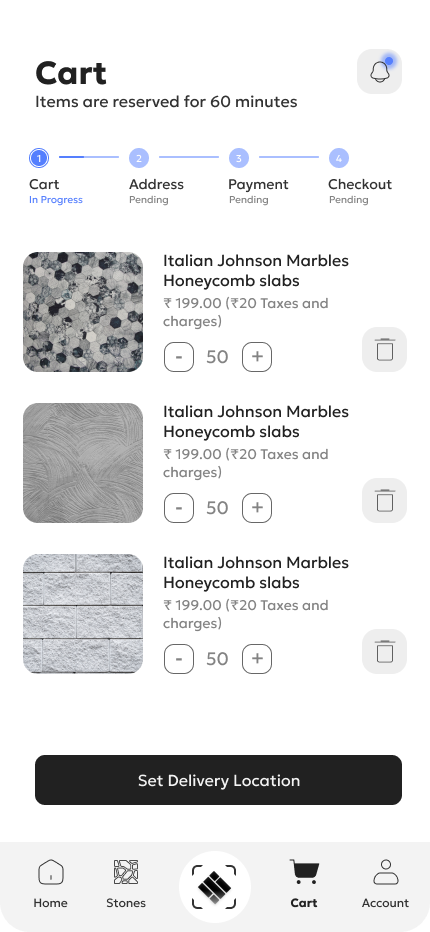
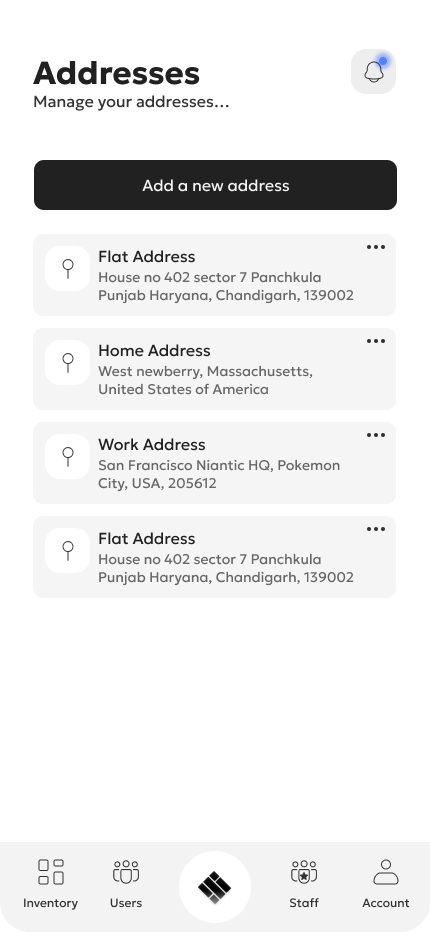
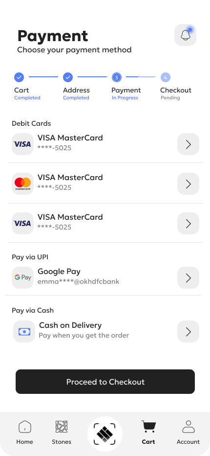
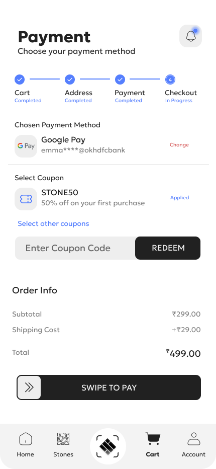
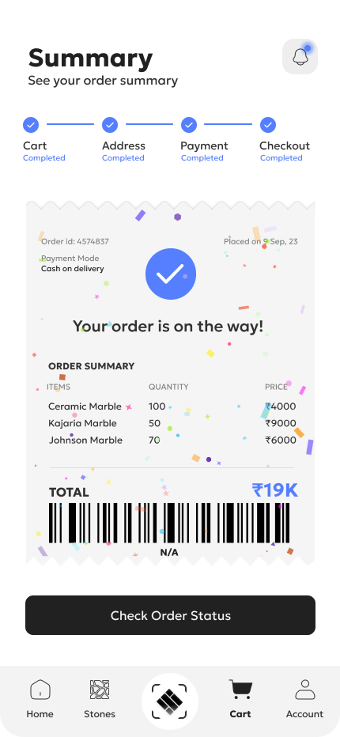
 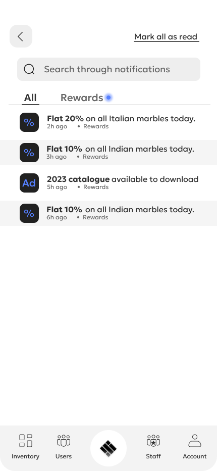
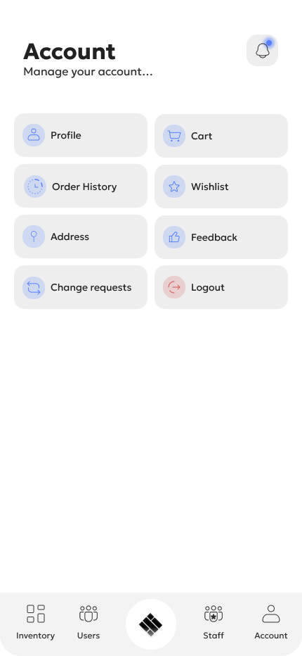
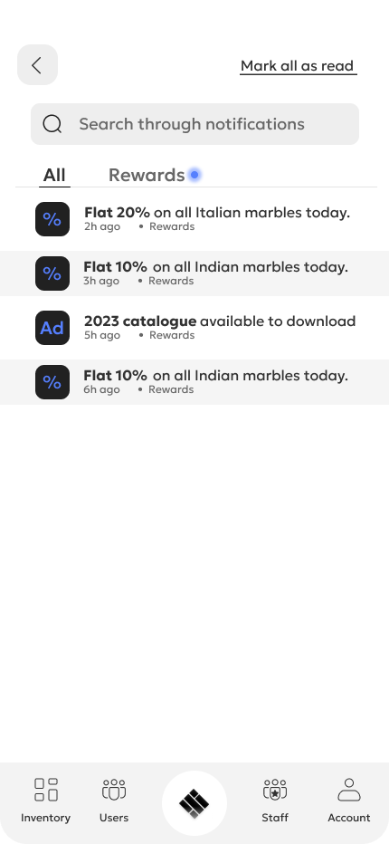
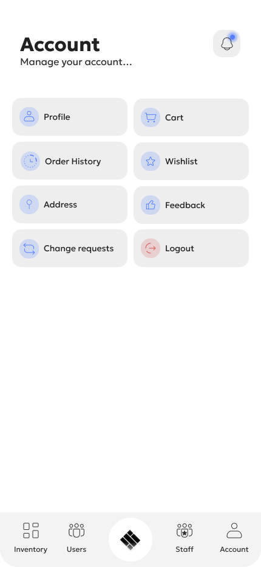

 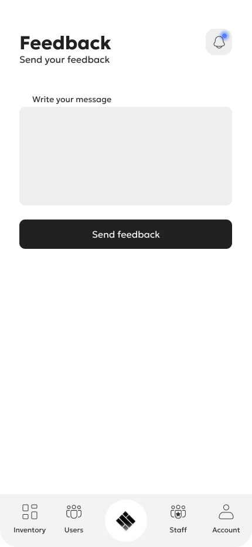
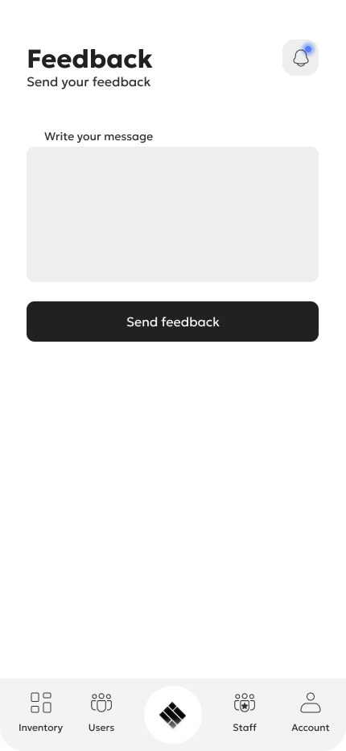


Wow you read it all! Click below to Celebrate with me :D